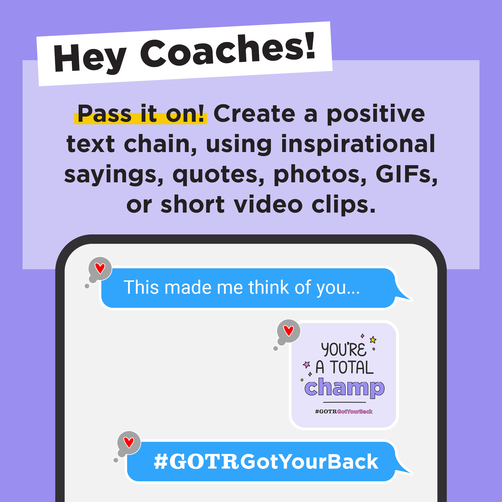

#GOTRGotYourBack Campaign
The COVID-19 pandemic of early 2020 presented itself as a significant challenge to the Girls on the Run Organization as a whole. The organization launched a multitiered response to help support councils, which included the rapid digitalization of programming components and the creation of the #GOTRGotYourBack Campaign.
The campaign's primary messaging was to be a beacon of positivity during a time that would test not only our nation, but the entire world.
